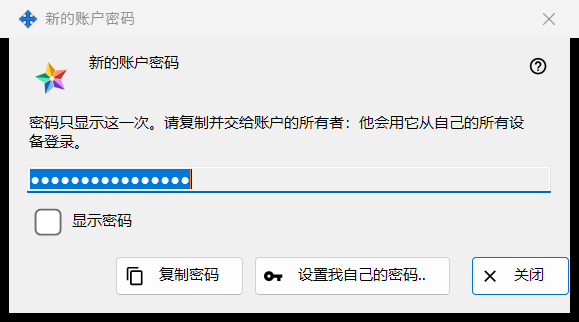
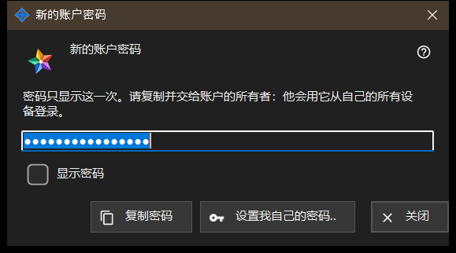

新的账户密码
用途说明
显示或请求交换服务器账户的密码，分三种模式：生成模式显示程序刚生成的密码，仅显示一次（即图中所示）；输入模式请求你自己的密码；保存模式显示保存在此电脑上的密码。它在 Share Manager 的本地交换服务器设置中，于「添加账户..」、「重置密码..」或「设置共享密码..」之后打开，也会从管理员密码的询问中打开。


操作顺序
- 生成模式：点击「复制密码」（勾选「显示密码」可查看），把密码交给账户所有者，然后点击「关闭」。
- 自己的密码：点击「设置我自己的密码..」或选择「自己输入密码」，输入符合规则的密码，然后点击「保存密码」。
- 保存模式：选中账户，点击「显示密码..」。
界面元素
生成的密码（图中）
标题为「新的账户密码」。说明文字写道：密码只显示这一次。请复制并交给账户的所有者：他会用它从自己的所有设备登录。该字段被遮蔽且只读；「显示密码」只在此窗口中把它显示出来。「复制密码」通过受保护的途径把密码放入剪贴板，使其不进入 Windows 剪贴板历史记录和云剪贴板，并提示：密码已复制。窗口关闭时该字段会被清空。
未复制就关闭
如果关闭一个既没有复制也没有显示过的生成密码，程序会询问：不复制密码就关闭吗？并补充说它无法再次显示 - 之后只能重置。默认答案为「否」。如果密码保存在此电脑上，则不会询问。
设置我自己的密码..
在账户窗口、共享邀请密码窗口和管理员密码窗口中使用：不使用生成的密码就关闭此窗口，并再次请求密码，这次是你自己输入的密码，它会替换生成的密码。
输入的密码
标题为「账户密码」，标签为「密码：」，另有一个被遮蔽的字段和「显示密码」。提示：至少 10 个字符，包含一个拉丁大写字母、一个拉丁小写字母和一个数字。输入时，警告行会指出缺少什么，例如：至少需要一个数字。「保存密码」会拒绝不符合规则的密码；符合规则的密码会返回给请求它的窗口，最终仍由服务器说了算。
保存的密码
标题在「账户密码」后加上登录名。窗口以只读方式显示保存在此电脑上的密码，并提供「显示密码」和「复制密码」；关闭时不会询问。它通过账户列表中的「显示密码..」打开，而该按钮只有在「在此电脑上保存账户密码」开关打开时才会出现。该开关默认关闭；打开时会先询问，之后密码会为你的 Windows 账户加密保存，在该账户下运行的任何程序都可以读取。开关打开之前设置的密码不会被保存。